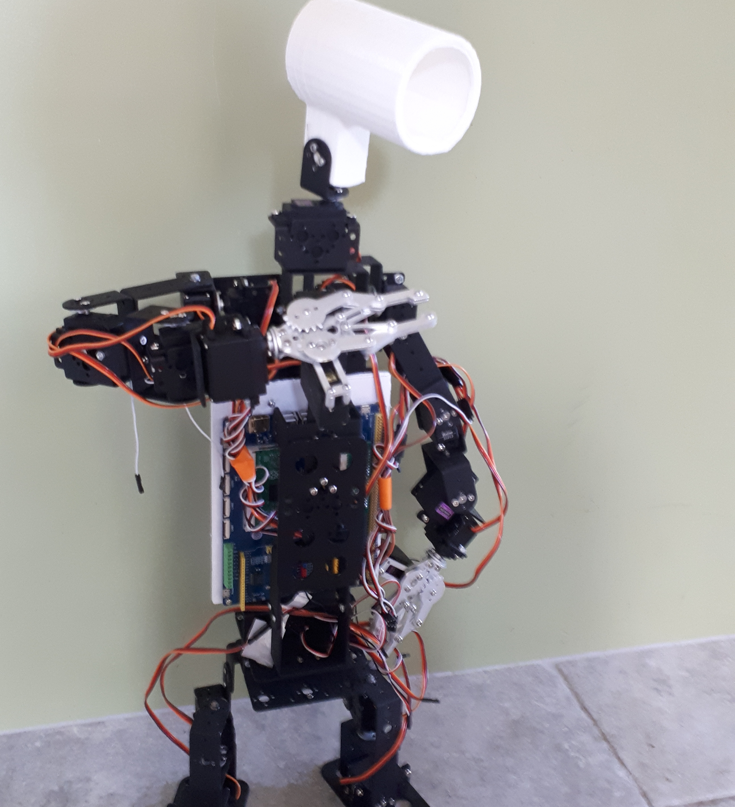
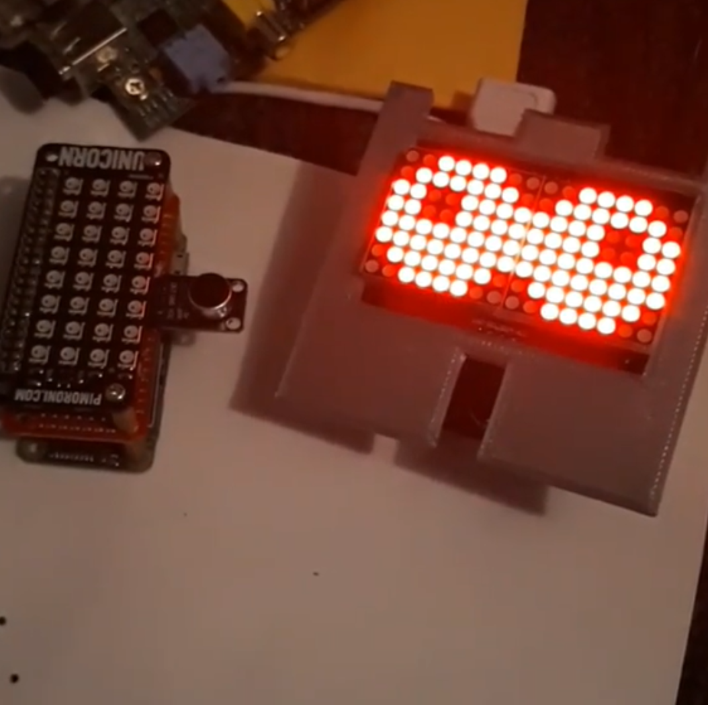
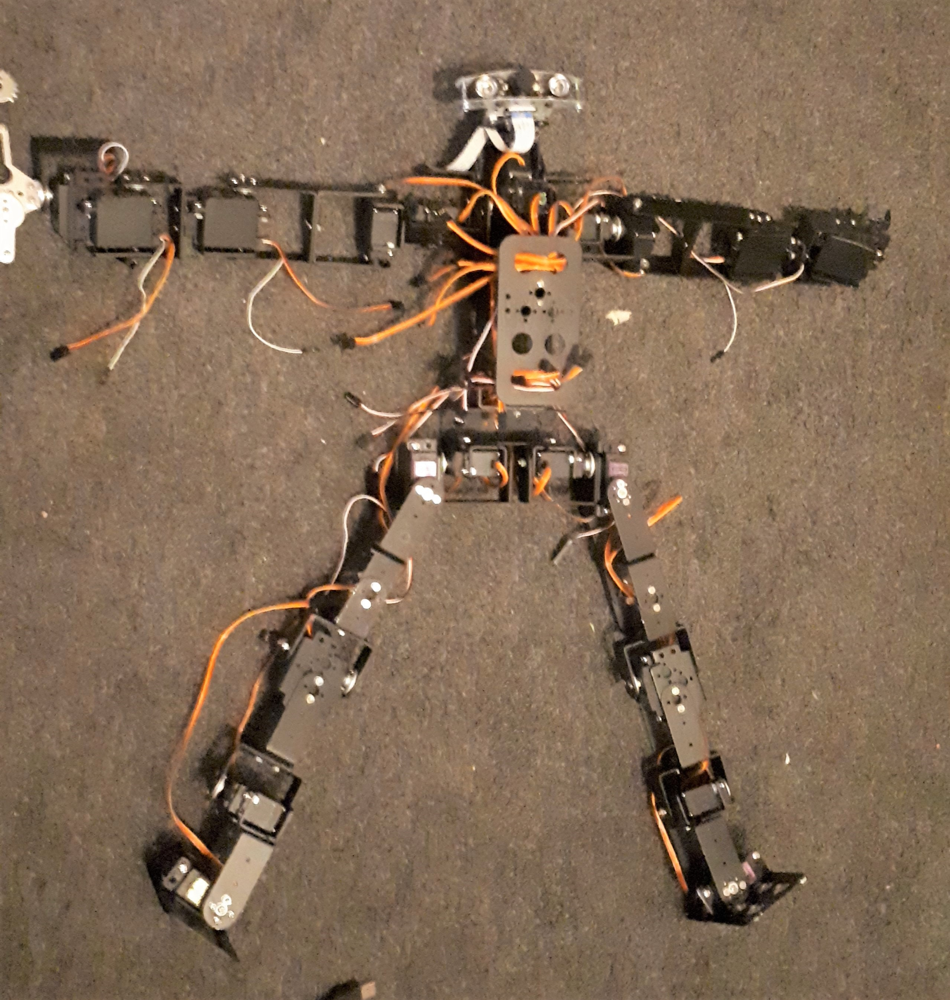
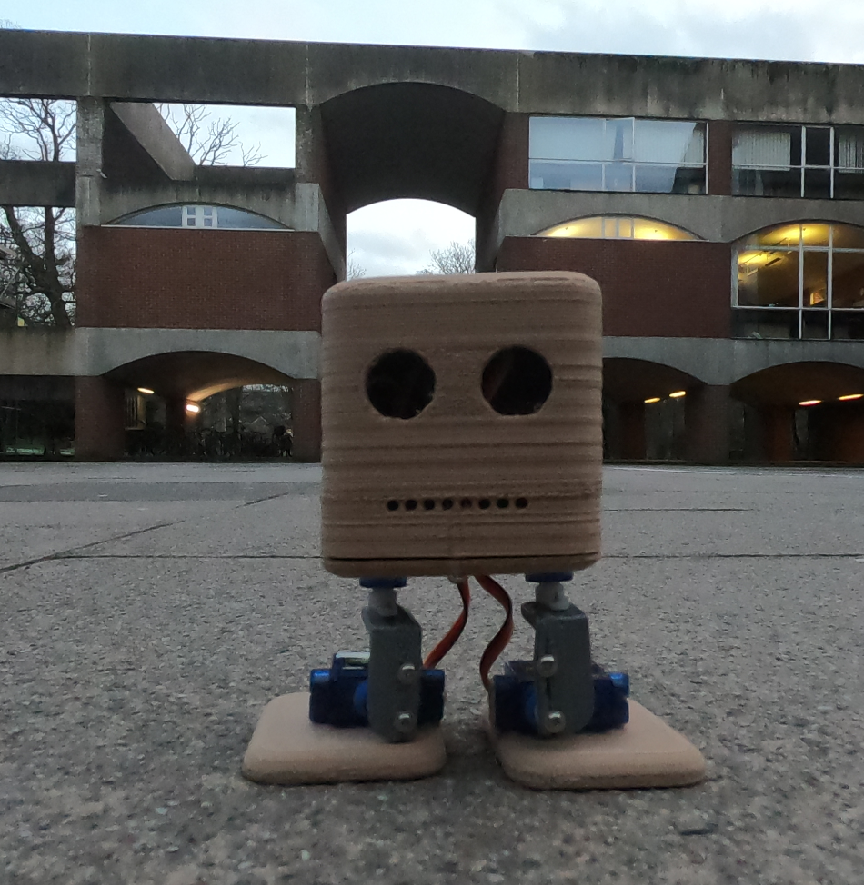
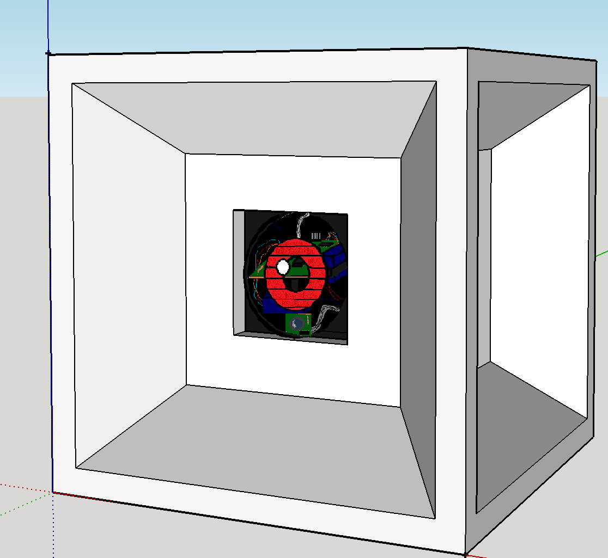

The overall goal of SHEP is not just to develop an AI, but to develop smart robots to assist humanity. SHEP robotics uses hardware which the AI can adjust to and use. For the begining versions, the hardware will be pre-programmed. As time goes on, this will become a more adaptable program which learns to use it's hardware to the best of it's abilities.
Ideas of how this will work are by using mirrors and stickers to show where motors are. The system will then simulate how to walk, and do it. This method is still a long way off.
 |
 |
 |
|  |
 |
 |
 |
We have been working on a design for a while which will test out the algorithm in a simple way.
This is the hypercube. They hypercube design was more to look 'cool' but also test out the fundementals of the AI
software
Below shows a design for the Robot...

The design is to have two microservos to tilt the camera and LED eye up, down, left and right to give a more
personal feel as well as improve the robot's abilities to see. A microphone and speaker (built in) will give SHEP
the communication abilities. The idea is to test the algorithm within a controlled enviroment. See how its
natrual built in abilities can adapt to be a part of its learning.
Of course, the fun is in the biped robots. Once the algorithm passes the hypercube robot, then we can
start implementing it in biped robots to see how it learns wihtin the new chassis.
CLIVE, the cognitive learning intelligent virtual enviroment is the latest proto-type project on the Arduino to test out artificial neural networks. It is designed to monitor and save information from its enviroment, then learn natrually from monitoring associations of data. This project is about understanding the brain and reproducing it into a computer system.